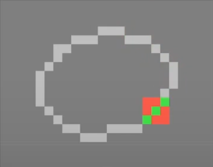
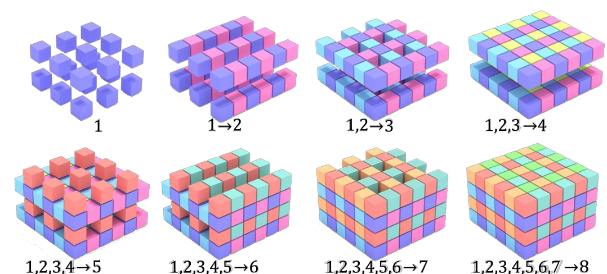

There are several ways to represent 3D shapes, each with their own advantages and disadvantages. Aspects to consider are the memory usage, how efficient operations are, and the constraints of the source data and target application.
Voxels = Pixels in 3D. Each Voxel stores an attribute like occupancy (boolean), distance from the object (SDF), colors, etc.
Advantages: arbitrary topologies, easy to query, easy to operate on neighbors.
Huge disadvantage: space requirement grows cubically. Sparse surfaces in occupancy grids lead to a lot of empty space (as the resolution grows, the ratio of occupied voxels goes to zero).
Set of locations of points (optionally, additional attributes). Unordered by definition. Can be the result of raw scanning data capture.
Advantage: More efficiently represents sparse surfaces.
Disadvantage: No spatial structure; less efficient neighbor queries.
Collection of vertices, (edges), and faces. Represent a piecewise linear approximation of a surface. Can approximate very closely if fine enough, though.
Advantages: arbitrary topologies, easy editing/manipulation, and easy rendering.
Definition: a polygon mesh is a finite set of closed (i.e. end = start point) and simple (not self-intersecting) polygons. Each polygon defines a face of the polygonal mesh.
Boundary: set of edges that belong to only one polygon. The boundary is either empty or consists of closed loops; if it is empty, the polygon mesh is closed.
Triangular meshes: polygons are triangulated. This simplies data structures/algorithms/rendering, since only triangles need to be considered.
Meshes can have additional attributes - for example, textured meshes.
Binary format, simply a list of triangles described by their corner coordinates: three bytes per coordinate, 9 coordinates per triangle => 36 bytes per triangle.
No connectivity information!
First, list of point coordinates (three numbers per line preceded by a v); then, list of faces (three or more indices per line, which refer to the points specified above, preceded by a f). More primitives, e.g. lines, also possible.
Other indexed face set formats: OFF, WRL
Functions (curves) or
(surfaces). More advanced:

Advantages of Bezier patch meshes:
Disadvantages:
Implicit surfaces are represented by functions that assign values to points which relate to the surface.
Signed distance function: Function s.t.
on the inside,
on the outside, and
on the surface. Instead of using a function, one can also use a voxel grid with the SDF values filled in.
If we mostly care about values close to the surface: use a truncated signed distance field with N/A values far from the surface.
Very efficient:
Advantages:
Fit a function s.t.
on the inside,
on the outside.

Poisson surface reconstruction [Kazhdan et al. ’06]: uses oriented points (i.e. points + surface normals) as inputs, computes an indicator function (0 or 1). From the point normals, the gradient of
, a vector field
, is computed. Then find a function
whose gradient approximates
: Solve
This can be transformed to a Poisson problem with the solutoin , then solved as least-squares fitting problem. (not more details given)
Extract the surface belonging to in form of a mesh.
Marching cubes algorithm [Lorensen and Cline 1987]: Discretize space into voxel grid. For each cube, compute the implicit function at the 8 corners. This allows to approximate the zero crossings (i.e. where the surface crosses the cube surface).
Lookup configuration in lookup table ( possibilities depending on the 8 values at the edges).

Improve by linearly interpolating the exact position on the cube edges (i.e. if the sdf is -1 on one corner and +10 on the other, the zero crossing should be closer to the first corner).
Advantages:
Disadvantages:
…to solve problems with bad triangles in meshes, etc.
Generate point cloud by sampling the mesh: Sample each triangle uniformly with barycentric coordinates, sample triangles with probability proportional to their area.
If are uniformly sampled, a random piont on the triangle is given by
Alternatively: farthest point sampling (sample next point to be farthest from all previously sampled points). However, this depends on the notion of distance (on mesh: discrete geodesic distance = path along edges).
how to describe geometry of local observation (i.e. point + its neighborhood)?
On discrete curves: problem that points have no well-defined tangent/normal. One reasonable definition: weighted average of incident edges’ normals, weighted by the edge lengths.
Estimate normal by approximating the plane tangent to the surface, as least-squares fitting problem.
Find neighborhood around point, then estimate a plane by PCA of this neighborhood. (Watch out: Orientation of normal is ambiguous.)
Local descriptor that describes connectivity of nodes/edges and surface geometry.


Often needed: e.g. in
Given: two shapes with overlap; register together by rigid transform s.t. distance is minimized:
for some distance measure
.
Challenges: find both point correspondences and transformation.
Goal: find best alignment, given correspondences (even for different shapes).
Namely, find that minimizes
. Solved as orthogonal Procrustes problem (1966).
Assume a coordinate system centered at the mean of the : then the minimization term becomes
The first sum is minimized by . To minimize the second sum, define the mean-centered
,
and compute the SVD of
:
.
Now replace the diagonal matrix by
: either by
if
, or
otherwise. Then the minimizer
is given by
Question: We had problems with this formula in Exercise 1, and had to slightly change it based on the original paper. Is it valid as written here or not?
Iterative algorithm:
Converges if the initialization is good enough. Optional steps: weight correspondences (by quality?), reject outlier correspondences before aligning.
Runtime: to find closest points naively,
to compute optimal alignment and update. So
overall runtime (where
is the number of iterations,
and
the number of points in shape
and shape
).
Better runtime with data structures like kd-trees.
Improved correspondence selection: minimize not pairwise distance, but distance to tangent plane of the surface. This can make the point correspondences more evenly distributed. No closed-form solution anymore, but faster in practice. (No details on how to compute this).
General strategy:
Approaches to find an initialization:
Just try out “all possible transforms” (or probably, a sufficiently dense subset of all transforms). Of course, this is extremely slow.
Center shapes, use PCA and align such that the principal directions match up. Works well in some cases, but can also go wrong - problems are:
RANSAC: pick random pairs of points, estimate alignment (details a bit unclear).
Identify feature points like corners that describe local geometry (“invariant” because they should be invariant under the transformation). Align these feature points.
Needed for the feature point matching approach: feature descriptors that can capture the information to answer “are these points similar?”.
To describe a point, create a spin image associated with its neighborhood. Neighborhood point contributions are parametrized by a) their distance to the tangent and b) their distance to the normal.
Find neighbors of point
, compute histograms based on distances, normal, curvature etc.
Capture models by high-dimensional shape descriptors, compare these descriptors with some similarity measure.
Histograms that capture how much surface area resides withing concentric shells of different radii.
Can be made a local shape descriptor restricting the shell radii.
Goal: find correspondences that preserve the geodesic distance on the shapes. In other words: even if the actual shape changes, pathes along the surface of corresponding points should stay the same.

One way to compute something like this: near isometries preserve local structure, so use descriptors of local regions and establish mappings between these. A problem: how to choose the scale of a local region?
The Hausdorff distance between two point sets is the maximum of all minimum distances .
The Gromov-Hausdorff distance is the infimum of Hausdorff distances over all mappings/correspondences.
Heat kernel : amount of heat transfered from
to
in time
. Advantage: invariant under isometric deformations, works at multiple scales. Difficult to use in real-world scenarios with partial/noisy data, though.

Find shapes similar to given shape in shape search engine. Approaches: bag of geometric words, i.e. decompose shape into some parts.
Retrieve similar shapes through embedding in descriptor space (also see Joint Embedding for Retrieval and Joint embedding of 3D scans and CAD objects in Lecture 5).
(I skipped this one because it’s only a repetition of I2DL/ML topics)
NN architecture working on occupancy grids. One of the first 3D CNNs, used for object classification on occupancy grids.
Also, object classification on occupancy grids. Uses anisotropic kernels and network in network (details?). Interesting: Performs much better on synthetic objects (89.9% acc.) than on real objects (74.5% acc.).
Works on a point cloud (unordered set of points). Can then be used for
Architecture:

Question: How does this relate to the architecture in Ex. 2? Is it really the same?
Unlike PointNet, also capture local structures (introduce hierarchical processing layer: grouping)
Motivation: human understand shapes by their parts; can guide other tasks like shape matching, shape recognition, part-based modeling.
Labeling: assign part label to each point (or face) of the shape.
Some (older) approaches work on single shapes: K-Means [Shalfman et al. ’02], Normalized Cuts [Golovinskiy and Funkhouser ’08], Primitive Fitting [Attene et al. ’06], Random Walks [Lai et al. ’08].
Better: learn from whole collection of shapes (consistently segment on a collection of objects)
Conditional Random Fields (CRFs), encoding relationships between neighboring faces (details: see slides).
Some limitations: e.g. all legs are labeled together, the individual legs cannot be distinguished. Also, sensitive to topology.
Helpful: ShapeNet dataset (~51k models in ShapeNetCore)
Simple option: 3D CNN for segmentation (convolve, have # classes channels in the end)
More advanced options:
Different part segmentation head (concat each of the point features from before the pooling with the global feature obtained from the pooling. Put resulting nx1088 data through shared MLPs to get output scores nxm - n points, m classes)
Take into account part hierarchy.
Encode relationships between neighboring segments via a graph that encodes object parts. Use a Graph NN and encoder/decoder structure (graph variational autoencoder).
(details -> slides)

Goal: find most consistent segmentation accross whole collection of shapes, without any supervision signal.
Segment per object; find similar parts accross objects (clustering) -> end result is a part segmentation of whole collection.
Drawback: uses handcrafted features.
Branched autoencoder. Reconstruct each part of the shape. Intuition: apprarently the autoencoder does not only learn good features for reconstructing the whole thing, but also for reconstructing/segmenting the parts.
Train a) on shapes that are segmented (but not necessarily consistently; e.g. accross several chairs, you don’t always have one-to-one corresponding parts/labels) (Part prior network) b) in an unsupervised way on a co-segmentation network
Overall architecture complex -> see slides.
System queries human “oracle”, minimally. For example:
Goal: human should do as little work as possible.
Goal: be able to generate shapes automatically. Usecases: for example, allow amateurs to create quality 3D models, and professionals to reduce repetitive work. Also, complete 3D structures that were partially observed.
Classification of partial shape; class label + input scan -> encoder - predictor network (32^2 voxel grid) -> database prior, multiresolution 3D shape synthesis -> output distance field

Recurrent approach: Encode each image with 2D CNN, then run feature vectors through convolutional LSTM and decode into a 3D occupancy grid with a CNN.
Auto-decoder architecture: like auto-encoder without the encoder part. Instead, the decoder works on codes sampled from an artificial latent space, which is optimized jointly with the decoder.
Allows
Also implicit 3D reconstruction: instead of an SDF, just reconstruct the function “p p inside the object?” implicitly.
“Just predict 512 points” or similar; less resolution <-> space tradeoff problems than with voxels.
Input: segmented image. Output: point cloud that represents the segmented object.
Input image -> 2D CNN -> MLP generates points.
Sketch-based task: from a 2D sketch, generate 3D shape.
Reconstruction via Coon’s patch:
Per category, templates of part decomposition are generated (details?). For each category, a generator is trained:
Trained with Chamfer distance loss + additional losses (normal alignment, collission penalization, patch flatness regularizer)
(indirectly possible via previous methods, e.g. predict sdf -> apply marching cubes)
Directly: can have loss actually on the mesh. Also, possibly more efficient mesh output than from marching cubes.
Start with ellipsoid mesh; deform to e.g. airplane
Architecture: Two pipelines, one convolving the input image, another deforming the mesh.
Disadvantage: no different topology possible
(not many details)
“Cut out the template intermediary” Details: see here in Lecture 6.
Retrieve a similar looking object’s mesh from a database (say, ShapeNet). Enables real-time 3D reconstruction!
Joint Embedding Space: space of both real images and shapes, s.t. semantically similar things are close - constructed from multi-view features - images mapped into space via CNN
…means that shapes and images are embedded in a joint embedding space (CNN image purification). Used in the previous method.
Construct embedding space end-to-end; use triplet loss for metric learning. This means that an instance is compared with a known positive correspondence (should be close) and a known negative correspondence (should be far away).
Start with image input. Segment into instances -> calculate embedding -> retrieve shape with close embeding. Also, classify the object pose. Combine retrieved shapes with refined poses into reconstruction.

More efficient than dense grid? => octtree
Problem: “neighbor queries” needed for convolutions can be less efficient Needed: known octtree structure => no generative tasks
Other architectures support generative tasks:
Predict if octtree cell is empty / filled / mixed
“Representing ‘the fine level’ in a sparse fashion” e.g. storing only the surface voxels with hashtable
Avoid spreading sparse information to dense via convolution  Submanifold sparse convolutions operate basically only close to the surface (details?)
MinkowskiImage(Slight) disadvantage: close points in euclidean space can be far removed in geodesic distance or even disconnected, in this case no information propagation by subman. sparse conv. is possible.
(Used for scan completion)
Sparse Encoder -> Coarse Resolution Dense Predictor @ Coarse Prediction Upsample + Filter out by Geometry (e.g. mask out space known to be empty)
Idea:
Advantage: can use fine-tuning on huge available 2D image datasets (which are not there for 3D)
Put in multiple images from the same object, put them through CNN. Idea: maybe one view is surer than another, and can provide more information.
Actually outperforms approaches with 3D inputs because of more training data.

Another idea: use on point clouds by rendering point clouds as spheres
Meshes, Point Sets, Molecule Graphs, …
Surface geometry: up to now, gridify 2d surface in 3d space and apply (possibly sparse) convolution. => Point Cloud represents this without grid
e.g. PointNet: pool over points, such that agnostic to ordering
Interpret as graphs!
Convolutions over graphs should have, like regular convolutions: local support, weight sharing; and they should enable analysis at varying scales.
Some geometric operators that might be useful for convolutions (how exactly? After all we’re not on a continuous surface?)
Similar definitions of discrete Laplacian on undirected graphs/triangular meshes (formulas -> see slides). Related to this: Graph Fourier transform (no more details on this).
Convolutions in local geodesic coordinate system  (Polar coordinates
(Polar coordinates )
Apply filters to geodesic patches (to be rotation-invariant: apply several rotated variants of the filter. Otherwise the choice of is arbitrary)

Then one can define Convolutional networks with these geodesic convolutions [Masci et al. ’15]
Computing this in practice: not trivial, but possible: uses a marching-like procedure that needs a triangular mesh. One needs to choose the radius of geodesic patches (compare with the kernel size).
Drawback: There is no natural pooling operation; can only use convolutions to increase receptive field. This is a huge drawback and hinders the performance.
Relies on Graph fourier analysis. Convolution thereom: convolution in spatial domain = multiplication in frequency space.
Disadvantages: unless you have “perfect data”, there are some drawbacks; e.g.g no guarantee that kernels have local support, no shift invariance. Also no natural pooling operations.
Open area for new developments.
CNN for triangle meshes: conv. and pooling defined on edge
Can perform reasonably well for part segmentation.
Nodes in a graph have features (hidden states) - optionally, also the edges and the graph as a whole. Hidden states are updated by aggregating messages from neighboring vertices/edges.
Constructs a mesh from a 3D scan.
3d Input scan -> downsample (convolutions), predict vertices -> predict edges (message passing network) -> dual graph (where each vertex corresponds to a mesh face, and an edge means that two faces are adjacent) -> output mesh. (see slides)
Difficulty: how to define loss? combine: be close to a ground-truth mesh (not very flexible), be close to the correct surface (can have weird artifacts in mesh: e.g. self intersections)
It can be an advantage to use multiple representations at the same time.
From point cloud, compute local neighborhood graph (-nn graph)
First use a 2d CNN on images, then backproject to 3d, then a 3d CNN on reconstructed geometry (and also the actual geometry)
Instead of real views, use rendered views. Also see here
Semantic labeling of textured meshes. Can leverage the texture signal as well.
3D Semantic segmentation: segment scene (e.g. room) in semantic parts (e.g. for each part: to which furniture type it belongs)
Scene segmentation and part semgentation are similar tasks. Differences:
You often cannot process a huge scene at full resolution at once without resizing! Compare with PointNet, PointNet++: combine local and global information, do things chunk by chunk.
For semantic segmentation.
Multi-view images have higher resolution and also color information!
Process multiview: first process in 2d, then backproject to 3d using known camera params. Feed results + original 3d geometry into 3d convolutions.
Convolutional architecture (no details given), key point: predicting complete geometry helps with semantic segmentation.
Adaptive to varying scene sizes. Drawback: for w x h x d scene, needs to be run O(w x h) times.
Convolutions can have parameters s.t. the output size = input size.
Relevant to semantic segmentation: first completing the scene helped later to correctly segment it.
Augment input with textures (I think? Not clear what happens exactly…)
Textures give higher-resolution input signal.
Seen before: convolve on active sites only. Improved semantic segmentation drastically (e.g. SparseConvNet, MinkowskiNet; 2019). Mostly because whole scenes can be processed at once now without running out of memory.
What about inputs that don’t natively lie in a 3d grid?
Based on point inputs; Goal: create adaptive convolution kernel (“deformable”?) by learning where points should be shifted (no details)

Can perform semantic segmentation in real time + online when walking around with a camera.

Goal: Fuse multi-view images with 3D geometry; get more information into the 3D geometry.
Problems with simply backprojecting real-world images:
Generate Synthetic images from 3d scene. Lose real-world information, but also do away with inaccuracies in real-world image capture: more images, wider field of view, ensured to be consistent.
Fusing process: first, apply pretrained 2d semantic segmentation. Then back-project to 3d, aggregate projected 2d features for one 3d point by averaging.
(unclear to me: How to generaate synthetic images that are better than the original (limited) images?)
Bidirectional interactions between 3d and 2d representations (“2d can inform 3d, but 3d can also inform 2d”). One 2D UNet which works with images and one 3D UNet which works on the reconstructed 3D scene, they interchange information and in the end predict 2D/3D labels.
Both the 2D results and the 3D results (slightly) improve because of this bidirectional information sharing.
Idea now: Not only detect object classes, but learn to actually distinguish different objects (the chair on the left, the chair on the right, etc.). So high-level goal: “Understand object-ness”.
Applications: virtual furniture rearrangement; robots grabbing objects; both need to know as a first step what the individual objects are.

Bounding boxes usually work well (e.g. furniture objects). It stops to work well for more flexible things like computer cables.
Let’s see what works well in 2D first.
Prespecified anchor boxes, find out for each: how likely is it that this covers an object => proposed bounding boxes

Propose bounding boxes -> Refine bounding boxes -> generate object masks.
Example [Liu et al. ’19] : U-Net style first, semantic segmentation, finally clustering. Clustering assumes good spatial separation.

Not working well if objects are close together (multiple chairs = one chair). Inverse problem as well: 2 parts of the same chair but with one part inbetween missing from the scan => 2 different clusters.
Also uses anchors like Mask R-CNN, predicts masks.
Architecture starts with 2D convs, backproj. to 3D and works with 3D Convs; predict anchors and predicts if they correspond to an object, then refines; finally predicts per voxel which mask it belongs to. (complicated architecture; don’t get all the details)
Trick: train on smaller chunks (while predicting whole scenes in the end).
Hallucinate missing geometry patterns (“to get better priors”), in order to improve the instance segmentation performance.
Architecture: Encoder-Decoder structure (for details see slides).
The simple Clustering approach is Bottom-up. Top down would be e.g. starting with finding an object, then refine it to really get the object
Spectrum between these two paradigms: E.g. the next model, VoteNet, combines some of both.
Anchors on point clouds: problematic; since points are often on the surface, don’t coincide with object center. Instead if anchors not restricted to point cloud (what does that mean?) => not clear how to distribute them
Goal: get object detection without scanning too much empty space.
Point cloud representation: get votes from each point to where the center of their object is.
Related to Hough transform (which is usually used to find lines). Instead of lines, we find centers.
This is a leading conceptual approach for detecting objects.
Multi-proposal Aggregation for 3D Semantic Instance Segmentation. Similar to VoteNet, but now also get instance segmentation out. Works on Point cloud (or here, rather sparse voxels?)

(for point cloud instance segmentation)
Bottom-up instance segmentation on point clouds. Input unordered point set ; Output per-point embeddings
.
Measure similarities between point embeddings, and group the similar points together.
Not clear what happens exactly, but points are encoded as Gaussian distributions, and distances between the distributions are calculated (Bhattacharayya kernel, etc.)
Loss: BCE (nice to optimize; can suffer from class imbalance, e.g. way more background than interesting objects).
Segment scene not only into instances, but even further segment instances into parts.
Start with synthetic priors of what e.g. chairs/tables/beds look like and how they decompose into parts. Combine linear combination of priors for a class to get a coarse estimate of how objects of this class look.

Motivation: make shape generation more accessible, require less expertise
capturing 3d photos (e.g. can change viewpoint a bit)
3d online interaction mimicking live interaction (“mixed reality”)
reconstructing with a Kinect
Fill in missing geometry in an incomplete scan.
we have a room (in this particular case, pretty much completely observed); but only point measurements (point cloud). Go from point measurements to whole continuous surfaces (e.g. implicit representation)
This could be done by classical surface reconstruction algorithms, but our goal is to learn geometric priors to help the task (to still perform well e.g. if the measurements are more sparse).
Sample code from latent space, then construct a plausible scene from it.

Let’s see how similar tasks are tackled in 2D.
Synthetic data: perfect ground-truth. Synthetic datasets:
Fully supervised approaches are fruitful with synthetic data because full ground-truth available.
RGB-D image -> geometry occupancy grid (of fixed size) + semantic labels
Architecture: bunch of convolutions and dilated convolutions.
(not completely clear what the point is)
Also operates in auto-regressive fashion: (8 forward passes instead of one per voxel) 
Note: on real-world scan data, the reconstruction is less clean
…in a self-supervised way, to get rid of the discrepancy between fake/real data.
Goal: learn to reconstruct patterns that are missing in a less complete scan, but present in a more complete scan => self-supervised scan completion!
Multi-Scale approach as well: dense predictions at coarse level; more sparse predictions at upsampled level.
Like previous approach, but also generate color.
Problems with simple loss like L1: many walls in the input => everything becomes wall-colored.
SPSG approach: project back to images (i.e. the actual input data); then use a 2d reconstruction loss, a 2d perceptual loss + a 2d adversarial loss.

i.e. a technique that works well on 3D shapes -> now applied to scenes? => doesn’t work as easily when working on scenes (not everything centered like for shapes, this makes it harder)
Also an advantage: can reconstruct shapes it has never seen before (otherwise, if it has never seen a car, it will turn it into something that is not a car)
First convolutional, then implicit occupancy network at the end.
First: (coarse) occupancy voxel grid; convolutions => feature vector per voxel
Trilinear interpolation: interpolate voxel feature vectors into feature vector for particular point
Second: feed this feature vector of a point in a implicit occupancy network (shared between decoding locations)
Usually: condense training data into network weights. But we could leverage the more detailed training data during test time by using it as a dictionary to look up examples of nice constructed objects.
Advantages/Disadvantages of Retrieval as Reconstruction:
Idea: create initial reconstruction estimate by composing chunks of train data. Then make it consistent afterwards
QUESTION: how well does this work with unseen objects?
Database retrieval (k-NN) -> attention-based refinement -> reconstruction

kNN via embedding space. Constructed with deep metric learning:
Use dot product similarity in more complicated expression to compute loss
k NNs merged together with attention.
Reconstruct scene by aligning CAD models (e.g. ShapeNet models) to it
For a point, estimate a heatmap on the candidate CAD models on where this point is likely to be.
Scan input, point, + candidate CAD models -> Encoded by 3D convs -> output: match (0 or 1), heatmap over CAD model, scale
Problem: objects aligned independently of each other.
Take into account dependency of objects on each other via a GraphNN (used at train time)
Trick: create scene by iteratively adding objects to a room (easier to generate everything from scratch). It must be learned e.g. which objects appear together usually.
Loop: partial scene -> decide: continue adding objects? (CNN) -> if yes: predict object category + location (CNN) and place object -> repeat
(autoregressive approach because of the loop)
For content creation and visualization: need more than geometry; also textures, materials, lightning…
Assume texture is already known (from images), but from motion blur etc., we get blur in the reconstruction. (Challenges: camera pose estimation, motion blur, distortion artifacts, view-dependent materials)
Use simple geometric primitives (i.e. planes) and project high-res textures onto these.

Apparently, uses more classical algorithms mostly. Also, kind of a “handcrafted” pipeline
Leraning an adversarial objective function that knows how real textures look.

In some way use differently aligned perspectives to feed into the discriminator (details a bit unclear)
Understanding possible interactions with objects (i.e. their function)
Not the object type, but more: e.g. to know how to open a drawer, we also need to find its handle. Which parts are the interactable parts?
Examples:
Related: predicting interaction poses (which pose does a person have when watching TV/writing on a whiteboard etc.). Can have a time component as well.
(Example: video with a horse -> can we forecast what the woman does next?)
Tracked human actors with motion capture. Learnt graph representation:
based on input texts (“watch-TV+restfeet-stool”), generate interaction snapshot. 
Limitation: very limited because of the small training set.
Get RGB video as input; Generates synthesized scene with human motion on a skeleton. 
Training: with short interaction videos (scenelests) from PiGraph data. First fit the skeleton statically, then perform a scenelet fitting using the database, then refine.
Train on interactions of a guy sitting at a table; using off-the-shelf image object recognition. Then synthesize new interactions to get animations of objects moving around.
Predicting static pose snapshots that showcase how the objects can be used.
extract
=> predict skeletons poses in 3d environment
Scene given. Generate bodies with VAE, use SMPL-X 3D body representation. Then fit the human body to the scene to avoid floating/collisions.
(no architecture details given)
More or less trying to achieve the same as the previous one (also uses SMPL-X).
Input: image + 2D pose history, Sample possible 2D destinations and predict the 3D path to the destinations.
Synthetic data generated from GTA game (persons moving in scene).
Excursion: transformers and attention (see slides
Goal: predict not just random poses, but characteristic poses of certain actions. Specifically, start with an input pose and simulate the next poses over time when a certain action is performed.
Multi-modal prediction distribution: e.g. left hand maybe be passing or close to body (if the right hand is passing). Predicting the average of both is bad => auto-regressive prediction: predict joints in sequential order.
Achieved using attention (over previous predictions). Then decodes into 3d heatmap (aka probability distribution).

Virtual 3D environments for training/testing AI agents
3D agent simulator (efficient rendering, on existing 3D datasets)
Has benchmark tasks:
Basic physics, partly dynamic objects
Works with scanned data.
PartNet has some objects with annotated parts where motion parameters (how far can it move) are specified. SAPIEN focuses on simulating interaction with such objects.
Broad motivation for this chapter: We want to use as little (annotated) data as possible, because data collection and data annotation are expensive.
Other hybrids exist: e.g. active learning -> use annotations more efficiently (human in the loop)
See only few (or one) example per class.
Problem usually: if you train on tables and chairs then want to reconstruct a bed, it might end up looking like a table. Goal in order to avoid: “the model should memorize as little as possible”
Input image -> depth estimation -> 2d spherical map (geometry outprojected into a sphere) -> inpaint spherical map image to fill in missing geometry -> backproject to 3d shape -> refine to get a final 3d shape

Input: lots of annotated images of one specific class (e.g. birds), but no 3d information. Then for one specific image, reconstruct a textured mesh.
(didn’t get the details of the architecture)

Transform an input image to a 3d representation, but this time a category prior can be used (e.g. image of a sofa, and the category prior is the mean of all known sofas).
Trained on image/3d shape pairs. But at test time, novel categories are presented where there are only a few (say 25) examples.
Architecture: encode image with 2d convolutions, prior shape with 3d convolutions -> concatenate (or sum?) the codes -> decode back with transposed convoutions.
The limitation is of course that some categories have much diversity, and then the approach doesn’t work as well.
“Train in Germany, Test in the USA”. An issue e.g. in autonomous driving: if an object detector is trained in different circumstances than it used in. If applying such a model to the different test dataset blindly, there will be a performance gap that we want to avoid.
Frequent issues found in self-driving car scenarios: misdetection (detect something where there isn’t anything), but even more mislocalization. The latter comes from different car sizes in e.g. Germany vs. the US, or accross different cities etc.
Solved by data normalization (domain adaption).
Given: multi-view image observations. Goal: find keypoints in 3D without having annotated training data. (Related: annotating 3D Keypoints is not well-defined anyway but very much subjective).
Use auxiliary task as weak supervisory signal: Aux. task is pose estimation from an image. Given are two views of which the ground-truth transformation between them is known . Then as supervision, they use that transforming the keypoints output for the first image should be close to the keypoints output for the second image
This matches what you want from a keypoint: Keypoints should be points that are identifiable from several views of the shape.

Input: Youtube videos of people standing still. Goal: estimate depth maps.
Using the “mannquin challenge” dataset (2000 videos): people try to stand still like mannequins, which satisfies the static scene assumption quite well. Via structure from motion and multiview stereo a depth image which serves as supervision signal ist estimated.
Goal at test time: also apply it to moving people, not just static people. To improve for this, also take into account a mask that shows where the humans are and a depth from flow estimation (obtained from having a video, not only a static image).

Mentioned before in Lecture 9. This also uses self-supervision to complete scans, while having only a dataset of incomplete scans, by learning how to go from less to more complete.
Goal: semantic understanding of point clouds. Pretrained on large unannotated dataset, fine-tuned on small dataset.
These idea come from similar ideas in 2D representation learning:
SimCLR [Chen et al. ’20], MoCo [He et al. ’20]. Use contrastive loss function to learn a representation where similar things are close, and dissimilar things are far away from each other. Compare with RetrievalFuse, where a similar concept and loss were used.
The supervisory signal here is that we can generate more data samples we know to be similar by data augmentation (If you have an image of a cat and do some cropping and resizing, you know it’s still an image of a cat; so make sure that the model learns this).
In 3D, we can even use more augmentation techniques related to multi-view constraints. So pretrain the model to be able to recognize originally close points in 2 images of the same 3d scene as similar, and far away points as dissimilar.
Extension of the previous PointContrast idea. Partition the scene into smaller regions, apply the contrastive loss in each region separately. This allows to get more performance out of using more sample points (while performance of the vanilla PointContrast approach saturates).
After the pretraining, train on limited number of fully-labeled scenes and on all scenes with limited point labeling budget (this would be suited to active labeling; not actually used here though).
Scenario: Much labeled data in one domain, but much less in a second domain. One example: synthetic domain (object annotations for free) <-> real domain (annotations expensive).
Common tasks approached: semantic segmentation, object detection.
Adapt between synthetic GTA images and real CityScapes images of cars on roads.
GAN: Generator should stylize the source image similar to the target image. Discrimnator tries to tell apart the images and also the extracted features. The source image and stylized source image should have semantically consistent features. Then goal: be able to use the same feature extractors from the source domain on the target domain.
No details here, but the same thing as for 2D applies: We have synthetic data that is labeled already, and want to use it for pretraining and then be able to apply the models to real data.